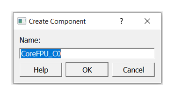

5.3 Instantiating User HDL Modules, IP Cores, and Components in SmartDesign
(Ask a Question)You can add one or more HDL modules, building blocks, and components from the Design Hierarchy tab to your design. The components can be IP cores from the IP Catalog tab, basic macros, design blocks, and other SmartDesign components available from the Components node in the Design Hierarchy tree or from the Components tab.
5.3.1 Instantiating a User HDL Module in your Design
(Ask a Question)To instantiate a user HDL source module, use either of the following procedures:
- On the Design Hierarchy tab, select the user HDL module of interest, drag and drop it onto the canvas.
- On the Design Hierarchy tab, right-click the user HDL module of interest and select Instantiate in <active_SD_name> from the right-click menu.
Result: The selected module is instantiated in the SmartDesign canvas.
5.3.2 Creating a HDL+ Core from an User HDL Source Module
(Ask a Question)To create a HDL+ core from a user HDL source module, perform the following steps:
- On the Design
Hierarchy tab, right-click the user HDL file and select Create Core
from HDL from the right-click menu. The Edit Core Definitions –
Ports and Parameters dialog box appears.
Figure 5-4. Edit Core Definitions – Ports and Parameters - Specify the ports and parameters as required and click OK. A BIF might also be added to the HDL core. It shows up in the SmartDesign with a BIF pin that can easily connect to the compatible instance BIF pins.
Result: The selected user HDL module is converted to an HDL+ core and can be instantiated in your SmartDesign canvas.
5.3.3 Configuring and Instantiating Instances in your Design
(Ask a Question)You can choose to configure and instantiate the following components in your design:
- SmartDesign component
- IP Core components
- User HDL cores
- Design blocks
5.3.3.1 Configuring and Instantiating an IP Core Component
(Ask a Question)Microchip offers a large portfolio of configurable cores. These cores are available from the Catalog tab. To instantiate an IP core component in your design, you must first configure the component.
- To configure and instantiate an IP core
component, use either of the following procedures:
- On the Catalog tab, select the IP core component of interest, drag and drop it onto the canvas.
- On the Catalog tab, right-click the IP core component of interest and select Instantiate in <active_SD_name> from the right-click menu.
- On the Catalog tab, right-click the IP core component of interest and select Configure core from the right-click menu.
Result: The Create Component dialog box appears.
Figure 5-5. Create Component Dialog Box By default, the selected IP core’s name is displayed in the Name box. You can use the next step to change the core’s name to a name of your choice.
- Enter an appropriate and unique name for your
core component in the Name box and click OK.
The Configurator window appears.
Figure 5-6. Configurator Window - Configure the core component as per your design requirements and click OK.
- (Optional) To re-configure an existing component, right-click the component and choose Configure. The Configurator window appears. Proceed with step 3 to modify the existing configuration.
Download the core component of interest from the Catalog tab, in either of the following ways.
- Double-click the core component of interest.
- Right-click the core component of interest and click Download.
Result: The core component of interest is downloaded from the Microchip vault to your local vault and is made available for configuration and instantiation.
For information on the types of available core components and its color representation, see 5.19 Appendix D – Component Types.
5.3.3.2 Instantiating SmartDesign Components, User HDL Cores, and Design Blocks in your Design
(Ask a Question)To instantiate a SmartDesign component, a user HDL core, or a design block use either of the following procedures:
- On the Design Hierarchy tab, select the SmartDesign component, user HDL core, or the design block of interest, drag, and drop it onto the canvas.
- On the Design Hierarchy tab, right-click the SmartDesign component, user HDL core, or the design block of interest, and select Instantiate in <active_SD_name> from the right-click menu.
Result: The selected components are instantiated in your SmartDesign.
- Repeat these steps to include the necessary SmartDesign components, user HDL cores, or design blocks of interest in your design.
- A component is either created within the existing project or imported into the existing project. Once in the project, the method for instantiating a component in your SmartDesign is the same regardless of the component type.
5.3.4 Replacing an Instance Component with a Different Component
(Ask a Question)You can choose to replace an instance(s) component with a different component or a different implementation while preserving the current instance’s interface (port) connections.
To replace an instance component with a different component, perform the following steps:
- Right-click the instance component and
select Replace Component from the right-click menu. The
Replace Component for Instance(s) dialog box appears.
Figure 5-7. Replace Component for Instance(s) Dialog Box The instance(s) section shows the following information:
- All Instances: Lists all instances of the component.
- Selected Instance: Shows the selected instance that will be replaced with the new component.
- Component: The component of the selected instance.
- From the New Component dropdown list, select the replacement component of your choice.
- By default, the Replace all instances using <component_name> with new selected component option is selected. When this option is selected, every instance of the selected component in the current design (the list of instances shown under the All Instances group) are replaced with the new component specified in step 2.
- As a result of the replace action, if the instance port list changes, then some pins connections might be dropped. The information related to the dropped pins connection in printed in the Log window.
- If the Replace all instances using <component_name> with new selected component option is deselected, only the selected instance is replaced in the design.
- If you select an instance and click OK for a non-valid component, the dialog box closes automatically, and an error message is printed in the Log window.
5.3.5 Updating a Component Core Version
(Ask a Question)The Update Component Version functionality enables you to update a component of an instance with another version. You can restore or update your component without creating a new instance or losing your connections.
- You can update a component version in your design
in either of the following ways:
- On the Design Hierarchy tab, right-click the component and select Update Component Version from the right-click menu.
- On the SmartDesign canvas, right-click the component and select Update Component Version from the right-click menu.
Result: The Update Component Version dialog box appears.
Figure 5-8. Update Component Version Dialog Box - The Change to
version dropdown list contains all the versions of the selected core available
in the vault. In the Change to version dropdown box, select the
version you want to upgrade to and click
OK.
Result: The core is automatically downloaded to the vault if it does not already exist in the vault. If the core exists in the vault, the component in the SmartDesign canvas is upgraded with the selected version.
5.3.6 Updating the Component Instance Port List
(Ask a Question)When the lower-level component port list is modified, the higher-level component is highlighted in red color and an exclamation symbol in shown within a red colored triangle at the top right corner of the component as shown in the following figure. This means that the instance port list needs to be updated.
Perform the following steps in the recommended order when the port list of the lower-level component is modified:
- Go to the next higher-level of the design hierarchy containing lower-port modifications.
- Right-click the lower-level component and select Update Instance from the right-click menu.
- Generate the higher-level component in which the instance is updated.
Result:The red colored triangle at the top right corner of the component disappears if the component update is successful.
5.3.7 Performing Additional Operations on Components
(Ask a Question)| Operation | Action |
|---|---|
| Configure | If the selected instance is a configured core component or parametrized HDL core,
the Configure option opens the Configurator
dialog box for the core to be configured. If the instance is a SmartDesign component, the Configure option brings up the SmartDesign canvas for edits. If the selected instance is an HDL module, the Configure option brings up the HDL code editor to edit the instance module. The configure operation is equivalent to double-clicking the instance. The Configure option is available only when a single instance is selected. For more information, see 5.3.3.2 Instantiating SmartDesign Components, User HDL Cores, and Design Blocks in your Design |
| Modify HDL | The Modify HDL option brings up the HDL code editor to
edit the HDL source file of the instance module. This option is available only when an
instance of an HDL core is selected. Note: The Modify HDL
option is only available for HDL modules. For an HDL module,
double-click the HDL component in the SmartDesign canvas or right-click the HDL
component and choose Configure to open the HDL file in the
HDL code editor. |
| Replace Component | The Replace Component option allows you to replace an
instance component with a different component or a different implementation while
preserving the current instance’s interface (port) connections. For more information, see 5.3.4 Replacing an Instance Component with a Different Component |
| Update Component Version | The Update Component Version option allows you to update a
component of an instance with another version. For more information, see 5.3.5 Updating a Component Core Version |
| Rename | The Rename option prompts you to modify the selected
instance name. Provide a new unique name for the instance and then click
OK. Note: An error message is shown in the
Log window if the instance name does not follow the HDL
naming rules. |
| Delete | The Delete option deletes the selected item. When multiple
items are selected, all of them are deleted. Note: Not all design objects
can be deleted. |
|
Create Hierarchical SmartDesign and Flatten Hierarchical SmartDesign |
You can choose to select one or more instances in your SmartDesign and create a
new SmartDesign out of it (all the nets and connections from the instance are
retained). or you can choose to flatten a hierarchical SmartDesign component. For more information, see 5.8 Working with Hierarchical SmartDesigns |
| Remove Connections | The Remove Connections option disconnects all pins that can be disconnected from nets. Pins that cannot be disconnected (for example, pins connected to pads) are logged in the Log window. |
| Highlight | The Highlight option opens a menu with multiple highlight
color options. Select a color of your choice and the selected instances are
highlighted with the chosen color. If any selected instances already have a different
highlight, then such instances are highlighted with the chosen new color. This option
is available when a single or multiple instances, nets, or ports are selected. If you highlight an instance, it automatically highlights the non-highlighted pins of the instance. Click Unhighlight all in the SmartDesign toolbar to remove the highlight color of all highlighted design objects, including highlighted nets. The Highlight option is also available in the right-click menu of the low-level instances in the Expanded Inplace view. |
| Help | This option brings up the handbook, the release notes, or the configuration user guides for the core. |